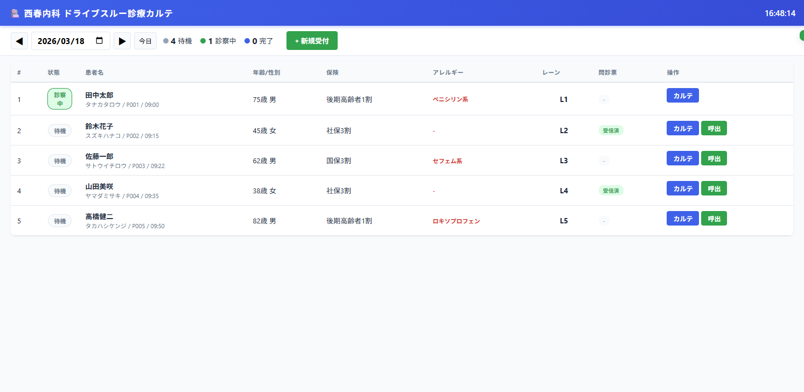
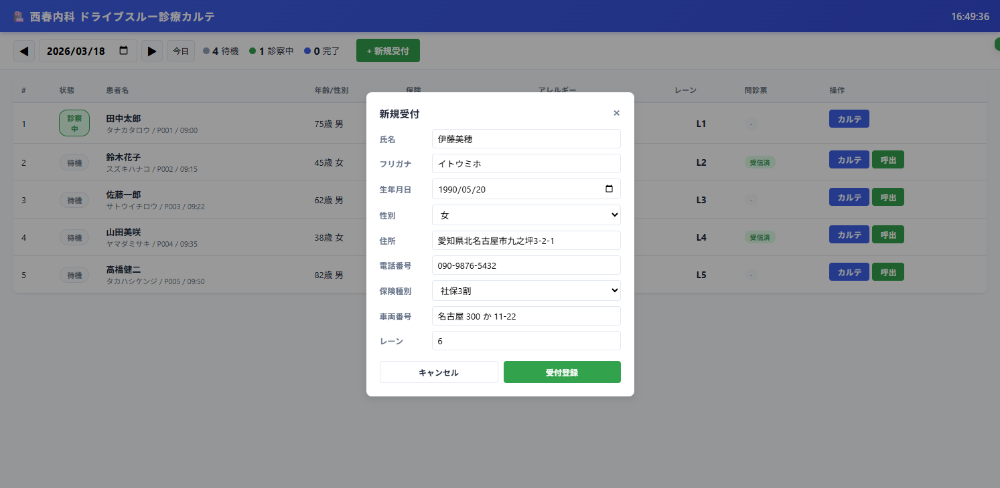
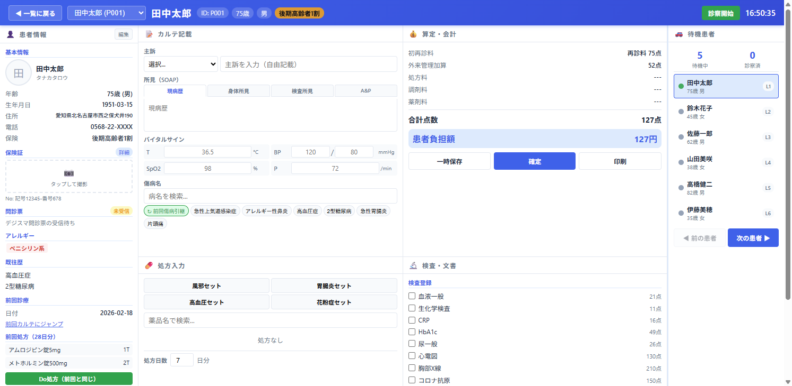
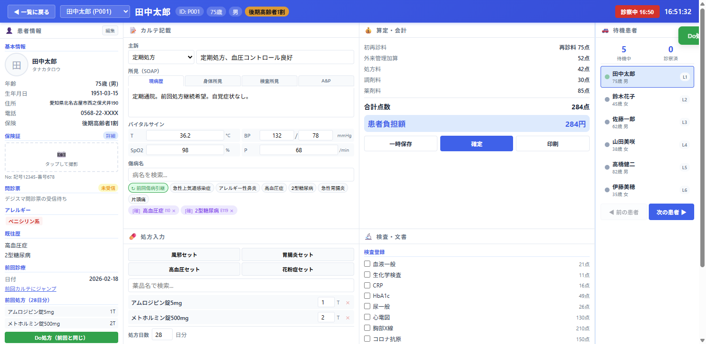
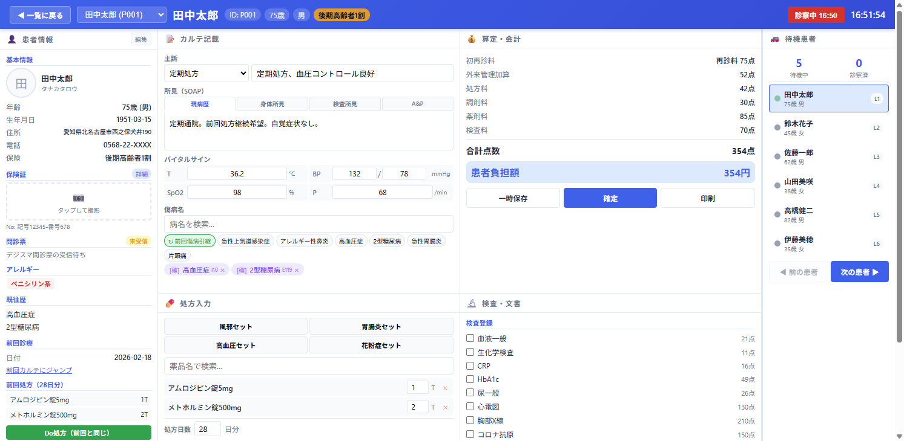
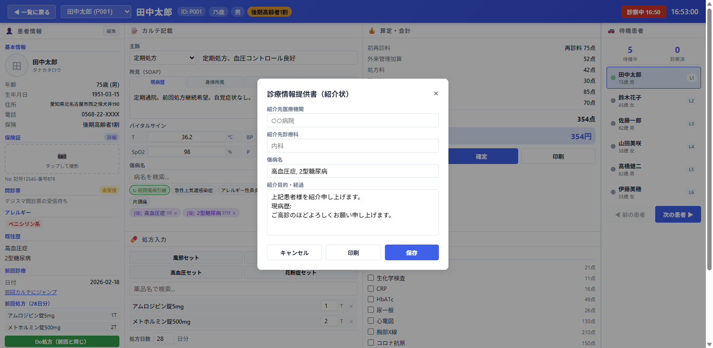
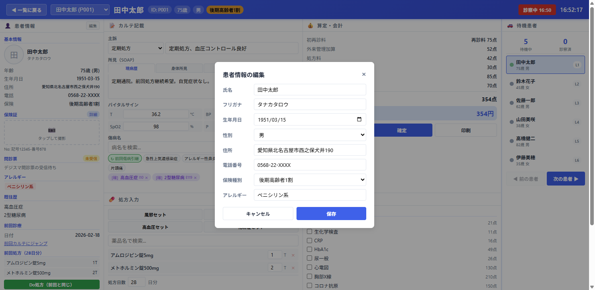
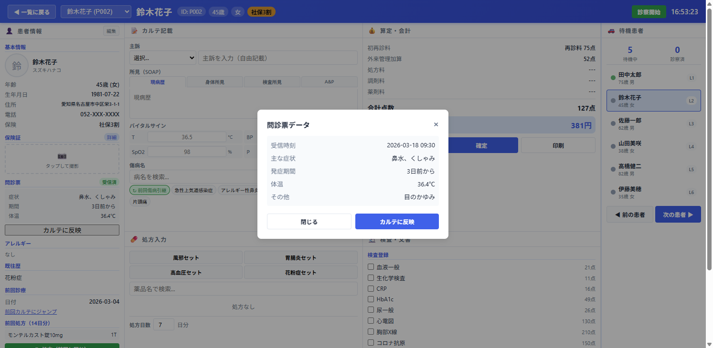
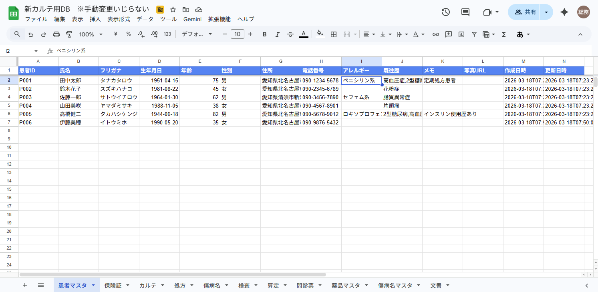

M3 DigiKarに代わる独立型ブラウザベース電子カルテ。Google スプレッドシート + GAS バックエンド。
タブレット / PC 対応。インストール不要。
4カラムGrid。患者情報〜会計まで1画面。
五捨五超入、初再診料、処方料、調剤料、薬剤料。
時間外(85点)・休日(250点)・深夜(480点)を自動判定。
当日の受付患者を一覧表示。日付切替、新規受付、呼出。
4カラムGrid。患者情報・カルテ・処方・算定・検査・待機。

| 要素 | 説明 |
|---|---|
| ヘッダー | クリニック名、リアルタイム時計 |
| 日付ナビ | ◀/▶ 日付切替、ピッカー、「今日」 |
| 統計バー | 待機・診察中・完了の人数 |
| + 新規受付 | 登録モーダルを開く |
| 患者テーブル | 状態、患者名、年齢/性別、保険、アレルギー等 |

| 項目 | 必須 | 説明 |
|---|---|---|
| 氏名 | 必須 | 漢字 |
| フリガナ | 任意 | カタカナ |
| 生年月日 | 任意 | 年齢自動計算 |
| 性別 | 必須 | 男 / 女 |
| 住所・電話 | 任意 | 連絡先 |
| 保険種別 | 必須 | 社保/国保/後期/公費/自費 |
| 車両番号 | 任意 | ナンバープレート |
| レーン | 必須 | 自動連番 |

| 位置 | パネル | 内容 |
|---|---|---|
| 左列（260px） | 患者情報 | 基本情報・保険証・問診票・アレルギー・既往歴・前回処方・メモ・車両 |
| 中央上 | カルテ記載 | 主訴（プルダウン＋自由記載）、SOAP 4タブ、バイタル、傷病名 |
| 中央下 | 処方入力 | セット処方、薬品検索、処方日数 |
| 右上 | 算定・会計 | 初再診料、加算、処方料、調剤料、薬剤料、検査料、合計 |
| 右中 | 検査・文書 | 検査チェックリスト、文書作成ボタン |
| 右端（220px） | 待機患者 | 待機リスト、前/次ボタン |
患者の全情報を縦スクロールで表示。上部「編集」ボタンで患者情報を修正可能。
| セクション | 内容 |
|---|---|
| 基本情報 | 氏名・年齢・生年月日・住所・電話・保険 |
| 保険証 | 写真アップロード、記号・番号、「詳細」ボタン |
| 問診票 | 受信状態バッジ、症状・体温、「カルテに反映」 |
| アレルギー | 赤色タグ表示（例: ペニシリン系） |
| 既往歴 | 疾患名一覧 |
| セクション | 内容 |
|---|---|
| 前回診療 | 前回受診日、「前回カルテにジャンプ」 |
| 前回処方 | 薬品名・用量一覧、「Do処方」ボタン |
| 患者メモ | 自由記載テキスト（自動保存） |
| 車両情報 | ナンバープレート、レーン番号 |

プルダウン（16種定型）+ 自由記載テキスト併用
| タブ | 内容 |
|---|---|
| 現病歴 | 発症経過、受診動機 |
| 身体所見 | 視診・聴診・触診 |
| 検査所見 | 血液検査等の結果 |
| A&P | 診断とプラン |
T, BP, SpO2, P を 2x2 グリッドで入力
| セット名 | 内容 | 日数 |
|---|---|---|
| 風邪セット | アセトアミノフェン200mg 3T + カルボシステイン500mg 3T + トラネキサム酸250mg 3T + レバミピド100mg 3T | 5日 |
| 胃腸炎セット | ドンペリドン10mg 3T + レバミピド100mg 3T + ロペラミド1mg 1T | 5日 |
| 高血圧セット | アムロジピン5mg 1T | 28日 |
| 花粉症セット | フェキソフェナジン60mg 2T + モンテルカスト10mg 1T | 14日 |
薬品名またはカテゴリ名（降圧、糖尿病、鎮痛など）で検索。薬品マスタ20品目登録済み。
左パネルの「Do処方（前回と同じ）」ボタンで前回処方を一括コピー。日数も自動設定。
1〜90日で設定可能。
薬剤料 = 薬価 × 用量 × 日数 で自動計算。
| 項目 | 点数 | 条件 |
|---|---|---|
| 初診料 | 291点 | 初診時 |
| 再診料 | 75点 | 再診時 |
| 外来管理加算 | 52点 | 再診時のみ |
| 処方料 | 42/29点 | 7種未満/以上 |
| 調剤料 | 11〜33点 | 日数により段階的 |
| 薬剤料 | 自動 | 五捨五超入 |
| 時間外 | 85点 | 平日18時〜/土12時〜 |
| 休日 | 250点 | 日曜・祝日 |
| 深夜 | 480点 | 22時〜6時 |
患者負担額: 合計点数 × 10円 × 負担割合（1〜3割）

| 検査名 | 点数 |
|---|---|
| 血液一般 | 21点 |
| 生化学検査 | 11点 |
| CRP | 16点 |
| HbA1c | 49点 |
| 尿一般 | 26点 |
| 心電図 | 130点 |
| 胸部X線 | 210点 |
| コロナ抗原 | 150点 |
| インフル抗原 | 150点 |
| SpO2モニタ | 30点 |
チェック → 算定パネルに自動反映
紹介先・診療科・傷病名・経過を記載。傷病名・現病歴は自動転記。
患者氏名・傷病名・所見を記載。
患者情報・処方内容が自動表示。

全患者のステータスをリアルタイム表示するサイドパネル。
直前に診察した患者に戻る（履歴ベース）
次の待機患者を呼出（現在の患者は自動で「完了」に）

左パネル「編集」ボタンから。氏名・フリガナ・生年月日・性別・住所・電話・保険・アレルギーを編集。
保険証写真アップロード（カメラ対応）、記号・番号、保険者名、有効期限、区分、負担割合を設定。

デジスマ問診票の受信データ表示。「カルテに反映」で主訴・現病歴・体温をカルテに自動転記。
| シート名 | 用途 |
|---|---|
| 患者マスタ | 患者基本情報（ID, 氏名, 年齢, 性別, アレルギー等） |
| 保険証 | 保険区分, 保険者番号, 記号, 番号, 負担割合 |
| カルテ | 診察記録（SOAP, バイタル, ステータス等） |
| 処方 | 薬品名, 用量, 用法, 日数, 薬価 |
| 傷病名 | 傷病名, ICD10, 確定/疑い |
| 検査 | 検査名, コード, 結果 |
| 算定 | 項目名, 点数, 合計, 負担額 |
| 問診票 | 質問, 回答, 入力元 |
| 薬品マスタ | 薬品名, 薬価, カテゴリ, 禁忌 |
| 傷病名マスタ | 傷病名, ICD10, カテゴリ |
| 文書 | 文書種別, タイトル, 内容JSON |

| メソッド | アクション | 説明 |
|---|---|---|
| GET | getPatients | 全患者一覧 |
| GET | getPatient | 患者1件取得 |
| GET | getKarteList | カルテ一覧 |
| GET | getKarte | カルテ詳細 |
| GET | getDrugMaster | 薬品マスタ |
| GET | getDiseaseMaster | 傷病名マスタ |
| POST | savePatient | 患者保存 |
| POST | saveKarte | カルテ保存 |
| POST | savePrescription | 処方保存 |
| POST | saveBilling | 算定保存 |
| ファイル | 行数 | 内容 |
|---|---|---|
| index.html | 323行 | HTML（2画面 + モーダル5種） |
| style.css | 614行 | 全CSS |
| app.js | 1,006行 | 全JavaScript |
| gas_setup.js | 601行 | GASバックエンド |
| リソース | ID |
|---|---|
| GASプロジェクト | 1YQ7vfPtWAi6Vy6iQIS9fVj6J6ZR6CaGJpW8bgh9i0g-... |
| スプレッドシート | 1FYpePnWd33udmESL1zNnoinSMsrioRrvXtrJDguRWbw |
西春内科・在宅クリニック | 2026-03-18